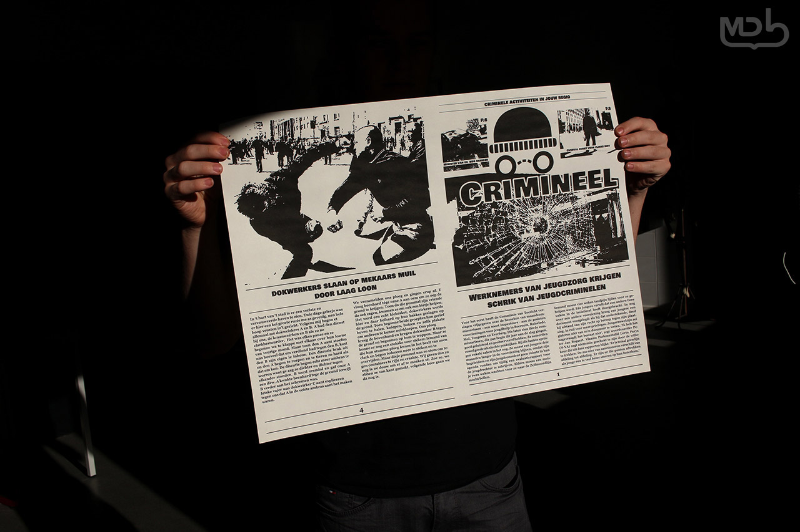

Op school maakte ik zoal opdrachten voor een stadsdichter en voor een festivalorganisatie. Hierdoor heb ik van grote projecten geen schrik. Ik ga nu nog zeker 3 jaar verder studeren voor een hoger diploma NXT Media Technologie te behalen om zo mijn kennis op grafisch gebied te vergroten. Deze site bevat al mijn beste werk dat ik op school en in mijn vrije tijd heb gemaakt.
Veel kijkplezier
Een experimentje waarbij ik frames van papier gebruikte om een animatie te maken
Een promofilmpje voor de Sportdag van mijn school waarbij we statische illustraties kregen en die moesten animeren.
Een Facebook-banner die ik gemaakt heb als gelegenheid voor de verhuis van Sint-Jozef OV4 die vierde dat ze van gebouw waren veranderd.
Een begingeneriek voor een fictieve soap-serie waarin elke leerling van de klas een rol kreeg voor een tafel een reis te laten maken.
Een interview met de voormalige stadsdichter van Turnhout: Tom Driesen. Dit was een opdracht voor de GIT van 2017-2018.
Een mini-documentaire die ik gemaakt heb over het Theaterplein. Hoe het ontstaan is en wat er allemaal te vinden is.


Dit zijn mijn illustraties die ik gebruikt heb voor mijn GIP van 2017. We moesten toen een gedichtenbundel, een gefilmd interview en een website maken voor de voormalig stadsdichter van Turnhout: Tom Driesen. Ik heb ze geverfd met aquarelverf en ze daarna ingescand als afbeeldingen.
Bij deze opdracht moesten we een subjectieve krant maken. Ik had het thema criminelen gekozen.
Bij deze opdracht moesten we een brochure maken over de monumentale gebouwen in Antwerpen. Voor de layout koos ik de kleurenstellingen van het Antwerpse logo. Iedereen van de klas moesten de gebouwen fotograferen en een informatieve tekst schrijven. Ik had het Theaterplein.
Bij deze opdracht moesten we een plattegrond maken voor een geluidswandeling op onze school. Ik koos voor de plek waar de wandeling werd gehouden een 3D projectie te illustreren. Voor de kleurenstellingen koos ik voor een combinatie van verschillende blauwe kleuren. Ik gaf voor iedere klasgenoot een eigen persoonlijke kleur om zo hun logo's te kunnen otwerpen. Ieder moest zelf een tekst over hun zelfgemaakte geluid schrijven en de foto's van iedere leerlingen werden aangeleverd.
Voor het gedichtenbundel voor Tom Driesen combineerde ik zijn gedichten met een illustratie. De illustraties maakte ik door elementen uit het gedicht te combineren. Ik maakte een lichte layout voor het gedicht om zo contrast te creëeren met de kleurrijke illustraties.
Ik heb samen met mijn vriendin Enrika Verbruggen een website gemaakt voor haar hondenschool B-Nice. We hebben de site gemaakt met leuke en vrolijke afbeeldingen om de toffe sfeer van de hondenschool uit te laten stralen.


Sinds kort ben ik de fotograaf voor de hondenschool B-Nice waar ik ook een website voor heb gemaakt. Ik maak foto's voor hun website en hun Tumblr-pagina